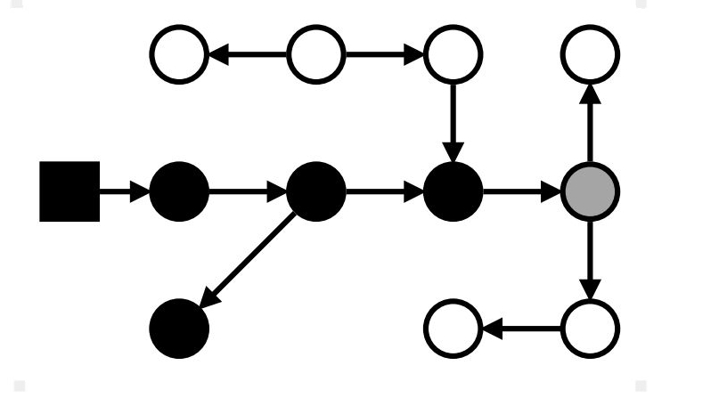

JMM и GC
Для чего?
В Java у разработчика есть доступ только к созданию объекта, мы не можем явно
его удалить. Для этого в JVM есть такой механизм как GC, который и подчищает
нашу память от неиспользуемых объектов.
Что такое выделение и очистка памяти?
-
Ключевые слова
- Stack и Heap
- Аллокация
- Утечки памяти (memory leaks)
- Время жизни объекта
- Корневая ссылка (root)
- Достижимый объект
Что такое Heap и Stack память в Java?

Stack память в Java
Стековая память в Java работает по схеме LIFO (Последний-зашел-Первый-вышел). Всякий раз, когда вызывается метод, в памяти стека создается новый блок, который содержит примитивы и ссылки на другие объекты в методе. Как только метод заканчивает работу, блок также перестает использоваться, тем самым предоставляя доступ для следующего метода.
Heap память в Java
Эта область памяти используется для объектов и классов. Новые объекты всегда создаются в куче, а ссылки на них хранятся в стеке.
Эти объекты имеют глобальный доступ и могут быть получены из любого места программы
Что такое Heap и Stack память в Java?

Что такое Heap и Stack память в Java?

Что такое Heap и Stack память в Java?
JMM - это синтетическое представление физической памяти

Аллокация
Аллокация: Как это происходит
Так как память в JVM освобождает GC, то аллокатору нужно лишь знать, где эту свободную память искать, фактически управлять доступом к одному указателю на эту самую свободную память. bump-the-pointer: каждому потоку выделяется большой кусок памяти, который принадлежит только ему.

Аллокация: Как это происходит
Аллокации внутри такого буфера происходят всё тем же инкрементом указателя (но уже локальным, без синхронизации) пока это возможно, а новая область запрашивается каждый раз, когда текущая заканчивается. Такая область и называется thread-local allocation buffer(TLAB).

Утечка памяти: Что это такое
Утечка памяти — это ситуация, когда в куче есть объекты, которые больше не используются, но сборщик мусора не может удалить их, что приводит к нерациональному расходованию памяти.
Проблема:
Утечка блокирует ресурсы памяти, что со
временем приводит к ухудшению
производительности системы. И если ее не
устранить, приложение исчерпает свои ресурсы и
завершиться с ошибкой
java.lang.OutOfMemoryError
Утечка памяти
Симптомы
- Серьезное ухудшение производительности, когда оно работает продолжительное время
- Возникновение в приложении ошибки java.lang.OutOfMemoryError
- Спонтанные и странные сбои в приложении
Утечка памяти:
из-за статических полей
В Java время жизни статических полей обычно совпадает со временем работы приложения
public class StaticTest {
public static List<Double> list
= new ArrayList<>();
public void populateList() {
for (int i=0; i<10_000_000; i++){
list.add(Math.random());
}
}
public static main(String[] args) {
new StaticTest().populateList();
}
}
Утечка памяти:
из-за статических полей
Однако, если мы отбросим слово static в строке номер 2, то это приведет к резкому изменению использования памяти:
public class StaticTest {
public List<Double> list
= new ArrayList<>();
public void populateList() {
for (int i=0; i<10_000_000; i++){
list.add(Math.random());
}
}
public static main(String[] args) {
new StaticTest().populateList();
Log.info("Free");
}
}
Утечка памяти:
из-за статических полей
- Как это предотвратить?
- Минимизировать использование статических переменных в приложении
- При использовании синглтонов использовать реализацию с ленивый загрузкой объекта, вместо немедленной
Утечка памяти:
через незакрытые ресурсы
- Всякий раз, когда мы создаем новое соединение или открываем поток, JVM выделяет память для этих ресурсов. Это могут быть соединения с базой данных, входящие потоки или сессионные объекты.
- Забывая закрыть эти ресурсы, вы можете заблокировать память, тем самым делая их недоступными для сборщика мусора. Это может произойти даже в случае возникновения исключения, которое не позволит программе выполнить код, отвечающий за закрытие ресурсов.
Утечка памяти:
через незакрытые ресурсы
- Как это предотвратить?
- Всегда используйте
finallyблок для закрытия ресурсов - Код (даже в блоке
finally), который закрывает ресурсы, не должен иметь никаких необработанных исключений
Утечка памяти:
неверные реализации equals() и hashCode()
При написании новых классов очень распространенной ошибкой является
некорректное написание переопределяемых методов equals() и hashCode()
HashSet и HashMap используют эти методы во многих операциях и если они не
переопределены правильно, то эти методы могут стать источником потенциальных
проблем, связанных с утечкой памяти
Утечка памяти:
неверные реализации equals() и hashCode()
Поскольку Map не позволяет использовать дубликаты ключей, многочисленные объекты Person, которые мы добавили, не должны увеличить занимаемую ими пространство в памяти.
public class Person {
public String name;
public Person(String name) {
this.name = name;
}
}
@Test
public void givenMap_whenEqualsAndHashCodeNotOverridden_thenMemoryLeak() {
Map<Person, Integer> map = new HashMap<>();
for (int i = 0; i < 100; i++) {
map.put(new Person("jon"), 1);
}
Assert.assertFalse(map.size() == 1);
}
Утечка памяти:
неверные реализации equals() и hashCode()
Поскольку мы не определили правильные метод equals(), дублирующие
объекты накопились и заняли память. В этом случае потребление памяти кучи
выглядит следующим образом:
Утечка памяти:
неверные реализации equals() и hashCode()
public class Person {
public String name;
public Person(String name) {
this.name = name;
}
@Override
public boolean equals(Object o) {
if (o == this) return true;
if (!(o instanceof Person)) {
return false;
}
Person person = (Person) o;
return person.name.equals(name);
}
@Override
public int hachCode() {
int result = 17;
result = 31 * result + name.hachCode();
return result;
}
}
@Test
public void givenMap_whenEqualsAndHashCodeNotOverridden_thenMemoryLeak() {
Map<Person, Integer> map = new HashMap<>();
for (int i = 0; i < 100; i++) {
map.put(new Person("jon"), 1)
}
Assert.assertTrue(map.size() == 1);
}
Утечка памяти:
неверные реализации equals() и hashCode()
- Как это предотвратить?
- Взять за правило, при создании новых сущностей (Entity), всегда
переопределять методы
equals()иhashCode() - Не достаточно просто переопределить эти методы. Они должны быть переопределены оптимальным образом
Утечка памяти:
внутренние классы, ссылаются на внешние классы
Утечка памяти:
внутренние классы, ссылаются на внешние классы
Как это предотвратить? Если внутреннему классу не нужен доступ к членам внешнего класса, подумайте о превращении его в статический класс
Утечка памяти:
использование ThreadLocals
ThreadLocal— это механизм, который позволяет изолировать состояние (значения переменных) в определенном потоке, что делает его безопасным.- Несмотря на свои преимущества, использование переменных ThreadLocal противоречиво, поскольку они могут являться причиной утечек памяти, если они не используются должным образом.
Утечка памяти:
использование ThreadLocals
- Как это предотвратить?
- Хорошей практикой является очищение
ThreadLocalпеременных, когда они больше не используются.ThreadLocalпредоставляет методremove(), который удаляет значение переменной для текущего потока - Не используйте
ThreadLocal.set(null)для очистки значения — на самом деле оно не очищает значение, а вместо этого ищет мапу, связанную с текущим потоком, и устанавливает пару ключ-значение — текущий поток и null соответственно - Еще лучше рассмотреть
ThreadLocalкак ресурс, который необходимо закрыть в блокеfinally, чтобы убедиться, что он всегда будет закрыт, даже в случае исключения:
Сборка мусора: до
Сборка мусора: после
Производительность GC
- 3 характеристики
- Пропускная способность (Throughput)
Объем вычислительных ресурсов, затрачиваемых на GC - Максимальная задержка (Latency)
Максимальное время, на которое сборщик приостанавливает выполнение программы для выполнения одной сборки. Такие остановки называются stop-the-world. - Потребляемые ресурсы (Footprint)
Объем ресурсов процессора и памяти, потребляемых сборщиком.
Треугольник оптимизации GC
Максимальная оптимизация производится по 2 вершинам в ущерб третей 3-й.
Например :
Уменьшая потребляемые ресурсы и
увеличивая пропускную способность нам
необходимо жертвовать временем
максимальной задержки, которая в нашем
случае вырастет
Достижимость объектов
- Чтобы найти мусор, нужно узнать, есть ли ссылки на объект
Три подхода:
- No-op: забить и считать всё достижимым
- Mark-*: Пробежаться по графу объектов, найти достижимое и посчитать всё остальное мусором
- Reference counting: на каждом чтении/записи считать количество ссылок на объект, при refcount=0 считать объект мусором
Пример маркировки объектов
- Граф объектов можно обойти, назначая объектам цвета:
- Белый: ещё не посещён
- Серый: посещён, но ссылки не просканированы
- Чёрный: посещён и ссылки просканированы
- Вся жизнь алгоритма маркировки – это покраска белого в серое, а серого в чёрное.
Маркировка: stop-the-world
Когда приложение остановлено, всё тривиально! Никто не мешается под ногами.
Маркировка: stop-the-world
Нашли все корни, покрасили их в чёрный, т.к. они по определению достижимы
Маркировка: stop-the-world
Ссылки из чёрных теперь серые, сканируем ссылки из серых
Маркировка: stop-the-world
Сканирование из серых завершено, красим их в чёрные; новые ссылки – серые
Маркировка: stop-the-world
Серые → чёрные; достижимые из серых → серые
Маркировка: stop-the-world
Серые → чёрные; достижимые из серых → серые
Маркировка: stop-the-world
Серые → чёрные; достижимые из серых → серые
Маркировка: stop-the-world
Серые → чёрные; достижимые из серых → серые
Маркировка: stop-the-world
Конец: всё достижимое – чёрное; весь мусор – белый
Маркировка: проблемы с мутатором
В concurrent mark всё сложнее: там есть приложение, которое меняет граф объектов. За это его презрительно называют мутатором.
Маркировка: проблемы с мутатором
Добрался указатель сюда, и только он начал сканировать ссылки...
Маркировка: проблемы с мутатором
Мутатор снёс ссылку из серого ... и вставил её в чёрный!
Маркировка: проблемы с мутатором
Или даже когда-нибудь потом вставил ссылку на транзитивно достижимый белый объект
Маркировка: проблемы с мутатором
Или даже когда-нибудь потом вставил ссылку на транзитивно достижимый белый объект
Маркировка: проблемы с мутатором
Марк завершился, и опаньки: есть достижимые белые объекты, которые мы сейчас снесём!
Маркировка: проблемы с мутатором
Ещё хуже: появился новый объект и ссылку на него записали под конец марка
Маркировка: проблемы с мутатором
- Есть два способа решить эту проблему:
- Incremental Update: перехватить записи и обработать вставки, обойдя новые ссылки – принимая новое на лету
- Snapshot-at-the-Beginning: перехватить записи и обработать удаления, запомнив старые ссылки – уворачиваясь от деструктивных изменений
Маркировка: Incremental Update
Красим все новые ссылки в серый
Маркировка: Incremental Update
Конец!
Маркировка: Incremental Update
Бонус: если объект создали, но не записали, его не маркаем
Маркировка: Incremental Update
Бонус: если ссылка на объект пропала, ну и ладно!
Маркировка: SATB
Красим все старые ссылки в серый
Маркировка: SATB
Красим новые объекты в серый
Маркировка: SATB
Доделываем...
Маркировка: SATB
Конец!
Маркировка: SATB
«Snapshot At The Beginning»: пометили все достижимые на начало сборки
Маркировка: две паузы в Concurrent
- Init Mark:
- Остановить мутатор, чтобы избежать гонок
- Покрасить весь rootset в чёрный
- Взвести SATB/IU-барьеры в готовность
- Final Mark:
- Остановить мутатор, чтобы избежать гонок
- Слить остатки из SATB/IU-очередей
- Доделать из остатков и изменений в rootset
Маркировка: наблюдения
- Хорошо сделанный STW GC побьет хорошо сделанный concurrent GC по чистой пропускной способности
- Разные GC по-разному будут влиять на приложение, даже если самих сборок не происходит.
Алгоритмы «сборки мусора»
- Mark-Sweep
- Фаза 1 – маркировка достижимых объектов
- Фаза 2 – «вычистка» мусора
- Copy collector (сборка копированием)
- Использует две области памяти, но выполняется в один проход
- Mark-Sweep-Compact
- Mark-Sweep +перемещение живых объектов
Stop & Copy
- Copy
- Живые объекты копируются в неактивную область памяти
- Неактивная область становится активной (и наоборот)
- Требует дополнительной памяти
- Время зависит от живых объектов
- Быстрая аллокация
- “Сдвиг указателя”
Mark & Sweep
- Mark
Помечаются все живые объекты - Sweep
Помечается неиспользуемое место - Возможен в фоновом режиме
Очень низкая скорость сборки - Фрагментация памяти
- Медленная аллокация
Списки свободной памяти
Mark Sweep Compact
- Mark
Помечаются живые объекты - Sweep
Помечаются мертвые объекты - Compact
Живые объекты переносятся в свободную область - Быстрая аллокация памяти
“Сдвиг указателя” - Низкая скорость сборки
Сборка мусора с поколениями
❖ Слабая гипотеза о поколениях основана на 2 наблюдениях
➢ Большинство объектов умирают молодыми
➢ Мало ссылок из старых объектов на молодые
❖ Вся память разбита на поколения
➢ Обычно 2 поколения – молодое и старшее
➢ Молодое поколение собирается отдельно
➢ Пережившие несколько сборок объекты переходят
из молодого поколения в старшее
➢ Используется всеми сборщиками в HotSpot VM
Сборка мусора с поколениями
Структура молодого поколения
Структура молодого поколения
Структура молодого поколения
Виды сборок
- Serial GC/Последовательная сборка
➢ В одном потоке , в режиме паузы - Parallel GC/Параллельная сборка
➢ В нескольких потоках одновременно, в режиме паузы - Concurrent GC/Фоновая сборка
➢ Одновременно с приложением в другом потоке - Incremental GC/Инкрементальная сборка
➢ Чередуется с приложением, не требуя длительных пауз
Serial GC: Принцип работы
- Heap
- Младшее поколение:
➢ Eden, Survivor 0 и Survivor 1 - Старшее поколение:
➢ Tenured - Среднестатистический объект начинает свою жизнь в регионе Eden

Последовательная сборка молодого и старого поколений
Serial GC: Принцип работы
Как только места для вновь создаваемого объекта в Eden нет, запускается малая сборка мусора.
Serial GC: Принцип работы
Как только места для вновь создаваемого объекта в Eden нет, JVM снова попытается провести малую сборку.
Serial GC: Принцип работы
Пока места в регионах Survivor достаточно, все идет хорошо.
Serial GC: Принцип работы
JVM постоянно следит за тем, как долго объекты перемещаются между Survivor 0 и Survivor 1.
Если регион Survivor оказывается заполненным, то объекты из него отправляются в Tenured.
Serial GC: Принцип работы
В случае, когда места для новых объектов не хватает уже в Tenured, в дело вступает полная сборка мусора, работающая с объектами из обоих поколений.
Serial GC: Принцип работы
В разделе Eden создается среднестатистический объект, а не любой
Объекты-акселераты
Бывают еще объекты-акселераты, размер которых настолько велик, что
создавать их в Eden, а потом таскать за собой по Survivor’ам слишком
накладно. В этом случае они размещаются сразу в Tenured.

Serial GC: Принцип работы
❖По умолчанию младшее поколение занимает одну треть всей кучи, а старшее,
соответственно, две трети.
❖При этом каждый регион Survivor занимает одну десятую младшего поколения, то
есть Eden занимает восемь десятых.
В итоге пропорции регионов по умолчанию выглядят так.
Serial GC: Принцип работы
А что же происходит, если даже после выделения максимального объема памяти и ее полной чистки, места для новых объектов так и не находится?
Serial GC: Принцип работы
❖ В этом случае мы ожидаемо получаем java.lang.OutOfMemoryError: Java heap space
и приложение прекращает работу, оставляя нам на память свою кучу в виде файла
для анализа.
❖Технически, это происходит в случае, если работа сборщика начинает занимать не
менее 98% времени и при этом сборки мусора освобождают не более 2% памяти.
Serial GC: ситуации с STW
❖С этим сборщиком все достаточно просто, так как вся его работа — это один
сплошной STW.
❖В начале каждой сборки мусора работа основных потоков приложения
останавливается и возобновляется только после окончания сборки.

Serial GC: Достоинства и недостатки
+ Непритязателен по части ресурсов компьютера
+ Так как всю работу он выполняет последовательно в одном потоке, никаких заметных
оверхедов и негативных побочных эффектов у него нет.
‒ Долгие паузы на сборку мусора при заметных объемах данных.
Serial GC: Вывод
Если приложению не требуется большой размер кучи для работы (Oracle указывает условную границу 100 МБ), оно не очень чувствительно к коротким остановкам и ему для работы доступно только одно ядро процессора, то можно приглядеться к этому варианту. В противном случае можно поискать вариант по-лучше.
Parallel GC: Принцип работы
Parallel GC (параллельный сборщик) развивает идеи, заложенные последовательным сборщиком, добавляя в них параллелизм и немного интеллекта.

Parallel GC: Принцип работы
Принципиальные отличия от Serial GC
❖ Сборкой мусора занимаются несколько потоков параллельно.
❖ Данный сборщик может самостоятельно подстраиваться под требуемые
параметры производительности.

При подключении параллельного сборщика используются те же самые подходы к организации кучи, что и в случае с Serial GC
Parallel GC: Принцип работы
❖ По умолчанию и малая и полная сборка задействуют многопоточность.
❖ Малая пользуется ею при переносе объектов в старшее поколение, а полная —
при уплотнении данных в старшем поколении
Parallel GC: Принцип работы
В случае, если вы задали слишком жесткие требования, которые сборщик не может
выполнить, он будет ориентироваться на следующие приоритеты (в порядке убывания
важности):
● Снижение максимальной паузы.
● Повышение пропускной способности.
● Минимизация используемой памяти.
Parallel GC: ситуации с STW
❖Как и в случае с последовательным сборщиком, на время операций по очистке
памяти все основные потоки приложения останавливаются.
❖Разница только в том, что пауза, как правило, короче за счет выполнения части
работ в параллельном режиме.
Parallel GC: Достоинства и недостатки
+ Возможность автоматической подстройки под требуемые параметры
производительности и меньшие паузы на время cборок.
‒ Определенная фрагментация памяти(в зависимости от кол-ва потоков ).
‒ Все настройки Serial GC крутятся вокруг размеров различных регионов кучи
Parallel GC: Вывод
В целом, Parallel GC — это простой, понятный и эффективный сборщик, подходящий для большинства приложений. У него нет скрытых накладных расходов, мы всегда можем поменять его настройки и ясно увидеть результат этих изменений.
Concurrent Mark Sweep (CMS) GC: Принцип работы
❖ CMS GC использует ту же самую организацию памяти, что и уже рассмотренные
Serial / Parallel GC:
➢ регионы Eden + Survivor 0 + Survivor 1 + Tenured
➢ и такие же принципы малой сборки мусора.
❖ Отличия начинаются только тогда, когда дело доходит до полной сборки
CMS GC: Принцип работы
Важным отличием сборщика CMS от рассмотренных ранее является то, что он не дожидается заполнения Tenured для того, чтобы начать старшую сборку.

CMS GC: Принцип работы
Старшая (major) сборка

CMS трудится в фоновом режиме постоянно, пытаясь поддерживать Tenured в компактном состоянии.
CMS GC: Принцип работы
Отдельно следует рассмотреть ситуацию, когда сборщик не успевает очистить Tenured до того момента, как память полностью заканчивается. В этом случае работа приложения останавливается, и вся сборка производится в последовательном режиме. Такая ситуация называется сбоем конкурентного режима
CMS GC: ситуации с STW
- Малая сборка мусора. Эта пауза ничем не отличается от аналогичной паузы в Parallel/Serial GC
- Начальная фаза поиска живых объектов при старшей сборке (так называемая initial mark pause). Эта пауза обычно очень короткая.
- Фаза дополнения набора живых объектов при старшей сборке (известная также как remark pause). Она обычно длиннее начальной фазы поиска.
- В случае же возникновения сбоя конкурентного режима пауза может затянуться на достаточно длительное время.
CMS GC: Достоинства и недостатки
+ Ориентированность на минимизацию времен простоя, что является критическим
фактором для многих приложений.
─ Но для выполнения этой задачи приходится жертвовать ресурсами процессора и
зачастую общей пропускной способностью.
‒ Сборщик не уплотняет объекты в старшем поколении, что приводит к фрагментации
Tenured.
CMS GC: Вывод
В целом, CMS GC может подойти приложениям, использующим большой объем долгоживущих данных. В этом случае некоторые его недостатки нивелируются. Но в любом случае, не стоит принимать решение о его использовании пока вы не познакомились с еще одним сборщиком в обойме Java HotSpot VM.
Garbage First (G1) GC: Принцип работы
Изменен подход к организации кучи.
❖ Память разбивается на множество регионов одинакового размера.
❖ Размер этих регионов зависит от общего размера кучи и по умолчанию выбирается
так, чтобы их было не больше 2048, обычно получается от 1 до 32 МБ.
Исключение
❖ Громадные (humongous) регионы, которые создаются объединением обычных
регионов для размещения очень больших объектов.
G1 GC: Структура кучи
❖ Молодое поколение
➢ Набор регионов
■ Eden
■ Survivor
➢ Выбирается динамически
G1 GC: Структура кучи

❖ Старое поколение
➢ Набор регионов
➢ Выбирается динамически
G1 GC: Структура кучи
❖ Большие объекты
➢ Не помещается в регион
➢ Называется “humongous”
➢ Хранится в наборе смежных
регионов
G1 GC: Структура кучи
❖ Collection Set
➢ Регионы, в которых будет происходить GC
■ Все молодое поколение
■ Некоторые регионы из старшего
поколения
● Фоновая маркировка определяет
наиболее подходящие
G1 GC: Структура кучи

Типы сборок
❖ В молодом поколении
❖ Смешанные (mixed)
❖ FullGC
G1 GC: Структура кучи
Сборка
❖ Копирование объектов в регионы,
помеченные как часть «To»-пространства
➢ Survivor - регионы
➢ Регионы из старшего поколения
G1 GC: Структура кучи
Освобождение памяти
❖ From - space больше чем
To-space(не обязательно!)
❖ Компактификация за счет
копирования
G1 GC: Структура кучи
RSet== Remembered Set
❖ Информация о местонахождении
ссылок на объекты из региона
❖ Позволяет собирать регионы
независимо
❖ RSet поддерживается
➢ Из старого в молодое
поколение
➢ Между регионами в старом
поколении
G1 GC: Принцип работы
Малая сборка
❖ MinorGC - убираются регионы Eden/Survived
○ Вместо переноса объектов может быть изменен тип региона, с Survived на Tenured
○ Используется алгоритм предсказания кол-ва мусора в регионе. Убираются имеющие
более высокую вероятность - отсюда название алгоритма
G1 GC: Принцип работы
Полная сборка(смешанной (mixed))
Процесс цикла пометки (marking cycle), который работает параллельно с основным приложением
и составляет список живых объектов.
❖ (Initial mark)Маркировка корневых объектов полученных из малых циклов, остановка
приложения
❖ (Concurrent marking)Параллельная пометка живых объектов , во время работающего
приложения
❖ (Remark)Остановка приложения и повторный поиск неучтенных объектов
❖ (Cleanup)Очистка от мусора при остановленном приложении, поиск пустых регионов для
новых объектов параллельно с работающим приложением
G1 GC: Принцип работы
Следует иметь в виду, что для получения списка живых объектов G1 использует алгоритм Snapshot-At-The-Beginning (SATB), то есть в список живых попадают все объекты, которые были таковыми на момент начала работы алгоритма, плюс все объекты, созданные за время его выполнения. Это, в частности, означает, что G1 допускает наличие плавающего мусора, с которым мы познакомились при рассмотрении сборщика CMS.
G1 GC: ситуации с STW
❖ Процессы переноса объектов между поколениями. Для минимизации
таких пауз G1 использует несколько потоков.
❖ Короткая фаза начальной пометки корней в рамках цикла пометки.
❖ Более длинная пауза в конце фазы remark и в начале фазы cleanup
цикла пометки.
G1 GC: Достоинства и недостатки
Недостатки
● Чувствителен к большим объектам
G1 GC: Достоинства и недостатки
Достоинства
● Адаптивный, подстраивается под требования к производительности и
выделенным ресурсам
● Уменьшена вероятность SWT
● Нет проблем с фрагментацией Tenured
● Новые интересные стратегии тюнинга приложений
G1 GC: Вывод
В целом, G1 GC это достойная замена CMS для серверных приложений, а так же как плацдарм для экспериментов.
Настройка GC в JVM: Serial GC
● Использование Serial GC включается опцией -XX:+UseSerialGC.
● C помощью опций Xms и Xmx можно настроить начальный и максимально допустимый размер кучи
соответственно.
● Существуют опции -XX:MinHeapFreeRatio=? и -XX:MaxHeapFreeRatio=?, которые задают
минимальную и максимальную долю свободного места в каждом поколении, при достижении которой
размер поколения будет автоматически увеличен или уменьшен соответственно.
● Установить желаемое отношение размера старшего поколения к суммарному размеру регионов
младшего поколения можно с помощью опции -XX:NewRatio=?
● При желании можно ограничить размер младшего поколения абсолютными величинами снизу и сверху
с помощью опций -XX:NewSize=? и -XX:MaxNewSize=?.
● C помощью опции -XX:-UseGCOverheadLimit можно отключить порог активности сборщика в 98%, при
достижении которого возникает OutOfMemoryError.
Настройка GC в JVM: Parallel GC
● Параллельный сборщик включается опцией -XX:+UseParallelGC.
● Вы можете вручную указать количество потоков, которое хотели бы выделить для сборки мусора. Это
делается с помощью опции -XX:ParallelGCThreads=?.
● При желании вы можете полностью отключить параллельные работы по уплотнению объектов в
старшем поколении опцией -XX:-UseParallelOldGC.
● Установка желаемых параметров производительности сборщика выполняется с помощью опций
-XX:MaxGCPauseMillis=? и -XX:GCTimeRatio=?.
● Опции -XX:YoungGenerationSizeIncrement=? и -XX:TenuredGenerationSizeIncrement=? устанавливают,
на сколько процентов следует при необходимости увеличивать младшее и старшее поколение соотвественно.
По умолчанию оба этих параметра равны 20.
● А вот скорость уменьшения размеров поколений регулируется не процентами, а специальным фактором
через опцию -XX:AdaptiveSizeDecrementScaleFactor. Она указывает, во сколько раз уменьшение должно
быть меньше увеличения.
Настройка GC в JVM: CMS GC
● Использование CMS GC включается опцией -XX:+UseConcMarkSweepGC.
● Так как подходы к организации памяти у CMS аналогичны используемым в Serial / Parallel GC, для него
применимы те же опции определения размеров регионов кучи, а также опции автоматической подстройки
под требуемые параметры производительности.
● Обычно CMS, основываясь на собираемой статистике о поведении приложения, сам определяет, когда
ему выполнять старшую сборку, но у него также есть порог наполненности региона Tenured, при
достижении которого должна обязательно быть инициирована старшая сборка. Этот порог можно задать с
помощью опции -XX:CMSInitiatingOccupancyFraction=?, значение указывается в процентах.
Настройка GC в JVM: G1 GC
● G1 включается опцией Java -XX:+UseG1GC
● Так как основной целью сборщика G1 является минимизация пауз в работе основного приложения, то и
главной опцией при его настройке можно считать уже встречавшуюся нам -XX:MaxGCPauseMillis=?, задающую
приемлемое для нас максимальное время разовой сборки мусора.
● Опции -XX:ParallelGCThreads=? и -XX:ConcGCThreads=? задают количество потоков, которые будут
использоваться для сборки мусора и для выполнения цикла пометок соответственно.
● Если вас не устраивает автоматический выбор размера региона, вы можете задать его вручную с помощью
опции -XX:G1HeapRegionSize=?. Значение должно быть степенью двойки, если мерить в мегабайтах.
● При желании можно изменить порог заполненности кучи, при достижении которого инициируется
выполнение цикла пометок и переход в режим смешанных сборок. Это делается опцией
-XX:InitiatingHeapOccupancyPercent=?, принимающей значение в процентах. По умолчанию, этот порог равен
45%.
● Если же вы решите залезть в дебри настроек G1 по-глубже, то можете включить дополнительные функции
опциями -XX:+UnlockExperimentalVMOptions и -XX:+AggressiveOpts и поиграть с экспериментальными
настройками.
Что есть ещё?
- ZGC
- Shenandoah